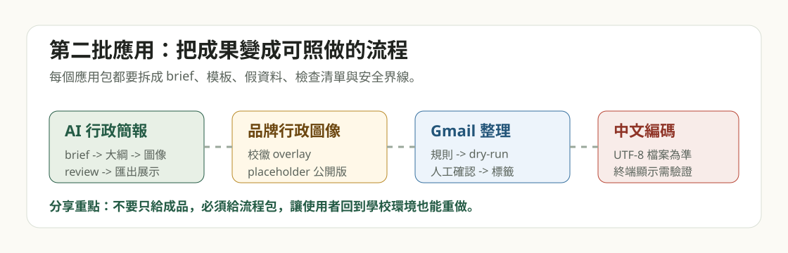
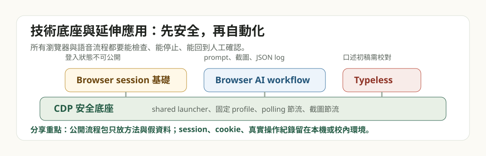

中文 Windows 編碼安全包
給 AI 避開中文亂碼用，適合所有 Windows 中文行政資料處理。
建議第一個學。先建立安全環境，再開始簡報、文件與網站內容整理。
打開流程包 頂溪國小
頂溪國小Flow Packs
先用「中文 Windows 編碼安全包」讓 AI 避開中文亂碼，再從「AI 行政簡報流程包」做出第一個看得見的成果。
這是最底層的安全包。先貼提示詞給 AI，讓它檢查 Windows 環境，盡量避免中文亂碼。
給 AI 避開中文亂碼用，適合所有 Windows 中文行政資料處理。
建議第一個學。先建立安全環境，再開始簡報、文件與網站內容整理。
打開流程包這是目前最適合主要受眾的成果入口。讓使用者做出看得見的簡報成果，再介紹其他支援流程。
從 brief、投影片大綱、圖片提示詞到 review checklist，完整支援行政成果分享與研習簡報。
完成底層安全設定後學。可直接搭配文件轉 Markdown、品牌圖像與確認清單。
打開流程包這些流程包會在做簡報時自然用到：整理素材、校對內容、做品牌視覺、把口述想法變成文字。
把 PDF / Word / PPT / 舊簡報轉成 AI 可讀文字。
做簡報 brief 和投影片大綱前，先把素材整理乾淨。
打開流程包校徽安全區、固定 overlay、圖像審查與品牌提示詞。
公開版使用 placeholder；校內版使用區網素材。
打開流程包適合簡報大綱、圖片審查、對外分享前的人工確認。
預估 10-20 分鐘，先建立「AI 整理，人來確認」的安全習慣。
打開流程包口述初稿、語音轉文字、AI 整理與人工確認。
讓不習慣打字的人也能先說出簡報重點。
打開流程包學會簡報工作流之後，再把同樣的拆解方法用到分類、行事曆與郵件整理。

建立案件分類、規則與輸出格式。
預估 20-40 分鐘，只分享通用模板。
打開流程包用假資料學會備份、dry-run 與人工確認。
預估 30-60 分鐘，不放真實 calendar ID。
打開流程包用假資料示範規則、dry-run、人工確認與套標籤。
不直接刪信；不公開真實郵件資料。
打開流程包給需要維護自動化、處理瀏覽器 session，或把 AI 工作流推進到跨工具操作的人。

shared launcher、固定 profile、polling 節流與截圖節流。
進階使用者與自動化維護者。
打開流程包已登入瀏覽器 session 的準備、smoke test 與安全界線。
不公開 profile、cookie 或 session。
打開流程包prompt 檔、截圖驗證、JSON log 與人工確認。
適合多工具 AI 瀏覽器流程。
打開流程包